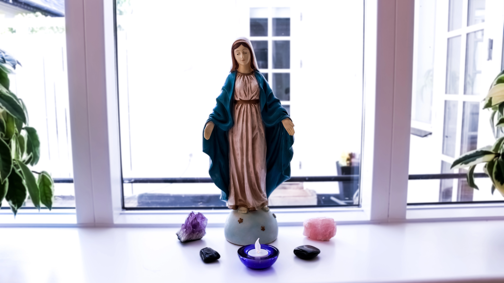

Teosofisk Forening
Teosofisk Forening tilbyder kurser og foredrag for dig, der er nysgerrig på alt det uforklarlige, du sanser og mærker i din hverdag.
Find et foredrag der passer til dit behov og gå på opdagelse i vores spirituelle univers. Lad inspiration og nysgerrighed være din drivkraft hos Teosofisk Forening.
